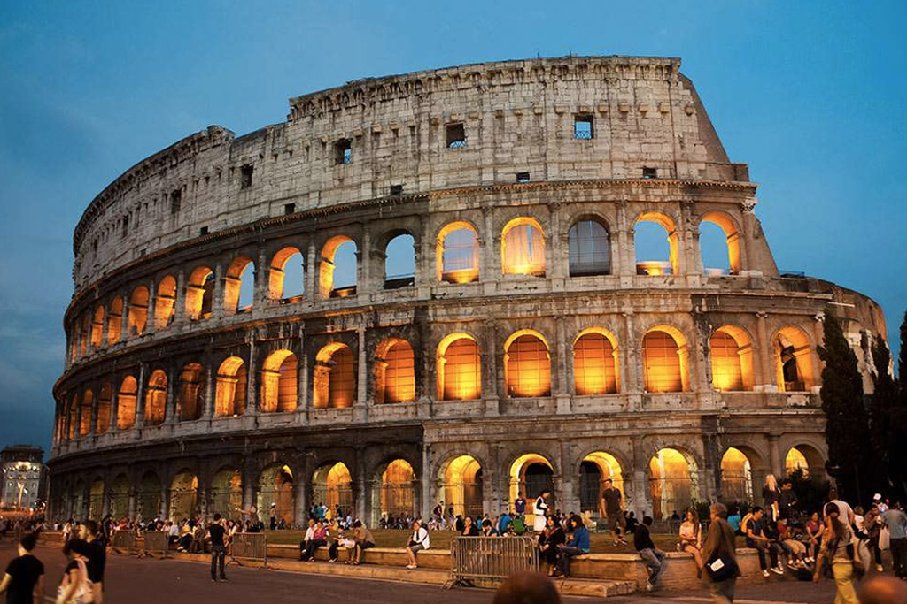
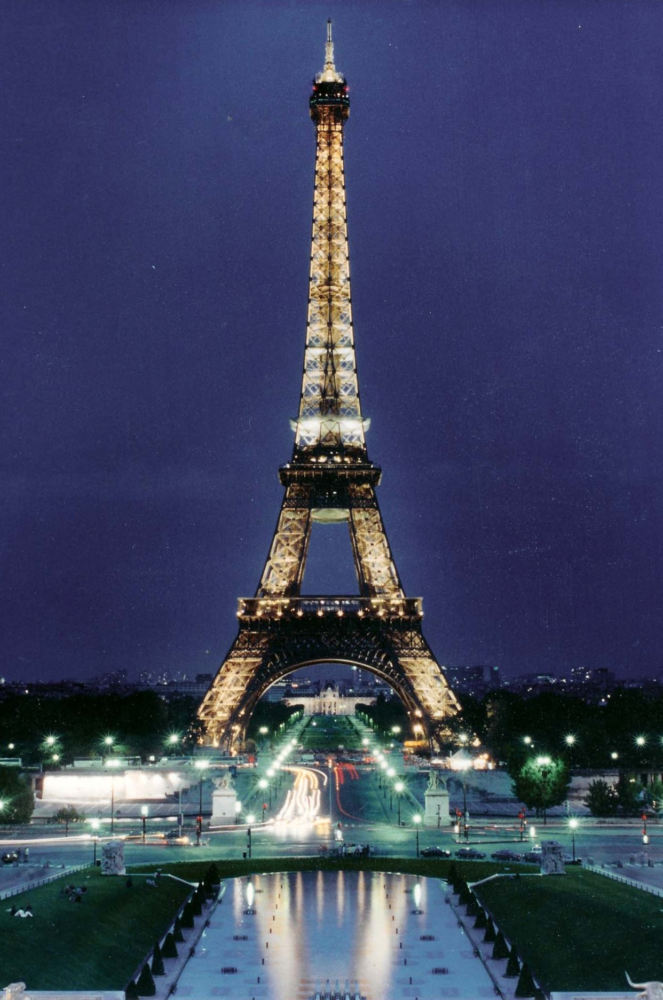
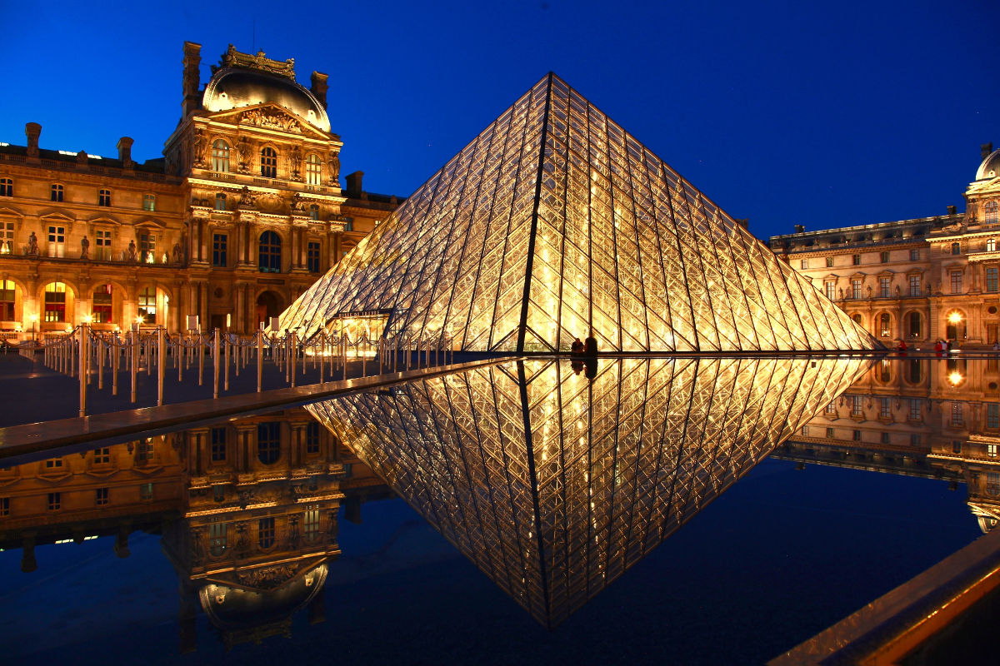
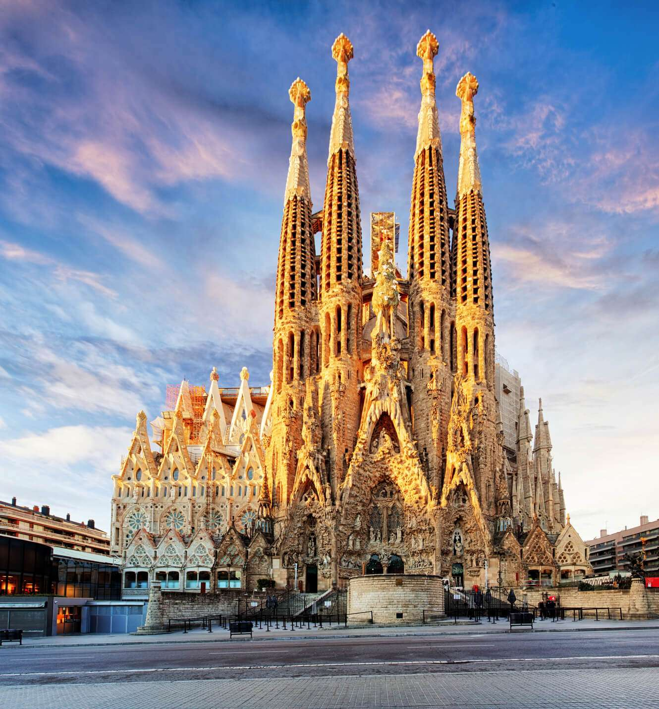
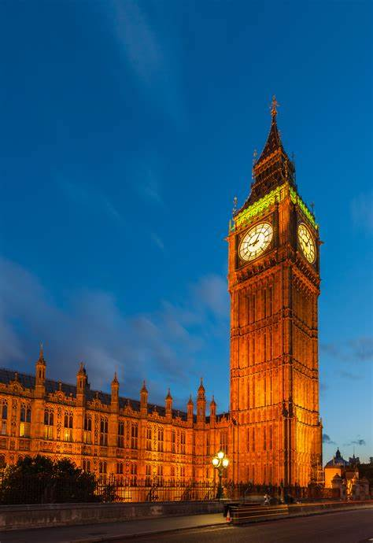

Coliseu em Roma
As lutas de gladiadores e simulações de caça com animais ferozes estão no imaginário de todos os que estudaram ou simplesmente assistiram filmes sobre o Império Romano. O Coliseu, cujo nome oficial é Anfiteatro Flaviano, começou a ser construído em 72 d.C e demorou oito anos para ficar pronto. A construção, de concreto e areia, foi comandada pelo imperador Flávio Vespasiano – homenageado pelo filho Tito, que governava Roma quando as obras acabaram. Na época, serviu à conhecida política do “pão e circo” do Império Romano, oferecendo espetáculos para distrair a população. Ao visitar hoje o local, símbolo de Roma e da história da civilização, os turistas podem entender como funcionava esse imenso anfiteatro com capacidade para cerca de 70 mil pessoas, com seus caminhos subterrâneos, rampas e alçapões. Recomendamos que garanta seu ingresso para o Coliseu com antecedência e evite filas. Endereço: Piazza del Colosseo, Roma, Itália Como chegar: metrô – descer na estação Colosseo da linha B Horário de funcionamento: aberto todos os dias, a partir das 9h30. O horário de fechamento é às 18:30, sendo a última entrada às 18:15 Preço: Ticket inteiro Coliseu-Fórum-Palatino: 16€; Ticket reduzido: 2€ (cidadãos da UE com idades entre 18 a 25 anos); gratuito: menores de 18 anos
Paris, França
Como não pensar na Torre Eiffel ao planejar uma ida à Europa? A construção de cerca de 300 metros de altura e dez mil toneladas que se tornou símbolo da capital francesa é capaz de dar um ar romântico a qualquer viagem. A Torre Eiffel foi construída para a Exposição Universal de 1889, que celebrava os 100 anos da Revolução Francesa. Uma competição de design arquitetônico selecionou o projeto do engenheiro Gustave Eiffel, que projetou o monumento como arco de entrada da exposição, no Champ de Mars. De cada um dos andares – e, principalmente, do alto da torre – os visitantes têm uma vista especial de Paris, e vale repetir a visita durante o dia e à noite, pois a experiência é única em cada momento. A fila para subir neste que é um dos principais pontos turísticos na Europa é grande e chega a duas horas de espera, caso você não compre a entrada com antecedência. Também recomendamos que você garanta os ingressos para a Torre Eiffel com antecedência para evitar filas e complicação.
Museu do Louvre
Já do lado de fora impressiona o contraste da moderna pirâmide de vidro construída na década de 1980 com a fachada do palácio do fim do século XII, que abrigou chefes de estado franceses até 1870. O Museu do Louvre é parada obrigatória para quem visita Paris, com suas coleções que remontam desde civilizações antigas até a arte ocidental da Idade Média. Aproximar-se de obras famosas, como a inigualável Mona Lisa de Leonardo da Vinci, pode ser uma tarefa difícil devido ao grande número de visitantes, mas vale a pena ter persistência. Um dos museus mais famosos do mundo, não deixe de comprar o ingresso para o Museu do Louvre sem fila. Endereço: Rue de Rivoli, 75058 Paris, França Como chegar: de metrô, pelas linhas 1 e 7. Descer na estação Palais-Royal Musée du Louvre Horário de funcionamento: todos os dias (exceto às terças-feiras) das 9h às 18h Preço: inteiro: 17€ (online) e 15€ (na bilheteria); gratuito: estudantes até 25 anos, aposentados, desempregados, crianças e jovens até 18 anos
Sagrada Família, Espanha
Em construção há 135 anos, a Sagrada Família deve ficar pronta somente em 2026, mas há muito tempo atrai visitantes de todo o mundo, que enfrentam filas intermináveis para conhecer a edificação. A basílica que se tornou um dos principais pontos de visitação para quem vai à Barcelona começou como um projeto neogótico de Francisco de Paula del Villar e Lozano. A pedra fundamental da igreja foi lançada em 1882 e, no ano seguinte, a edificação passou para as mãos de Antoni Gaudí, arquiteto catalão reconhecido mundialmente por seus trabalhos originais e cheios de criatividade. O ingresso prioritário garante entrada na atração sem fila, por isso, recomendamos que compre com antecedência. Endereço: Carrer de Mallorca, 401, Barcelona, Espanha Como chegar: de metrô: basta pegar as linhas 2 ou 5 e descer na estação Sagrada Família Horário de funcionamento: abre todos os dias, a partir das 9h às 18h Preço: entrada e audioguia: 26€; entrada com visita guiada: 27€ Saiba como conseguir os ingressos para a Sagrada Família.
Big Ben em Londres, Inglaterra
Oficialmente conhecida como Elizabeth Tower, este é um dos pontos turísticos na Europa mais queridos pelos brasileiros. É só falar em Londres que todo mundo imagina o famoso relógio às margens do Rio Tâmisa. Localizado na Torre Elizabeth, no Parlamento Inglês, Big Ben é, na verdade, o apelido do imenso sino, de mais de 13 toneladas, que fica no alto da torre. Conhecido por sua absoluta precisão, o relógio parou pouquíssimas vezes desde sua inauguração em 1859. Nem mesmo a bomba que atingiu o parlamento durante a Segunda Guerra Mundial fez com que ele deixasse de marcar as horas. Vale a visita para admirar a belíssima construção em estilo gótico e tirar a tradicional foto com o relógio ao fundo. Quem quiser ir um pouco além, pode fazer um tour em áudio (disponível em português e outros idiomas) ou guiado (não disponível em português) e até mesmo complementar com um tradicional chá inglês em um salão com vista para o Rio Tâmisa. Endereço: Westminster, London SW1A 0AA, Reino Unido Como chegar: de metrô: basta pegar as linhas District, Circle ou Jubilee e descer na estação Westminster Horário de funcionamento: as visitas à torre do Big Ben estão suspensas por causa da reforma Preço: o preço do ingresso inteiro antes do fechamento temporário era: £26,50